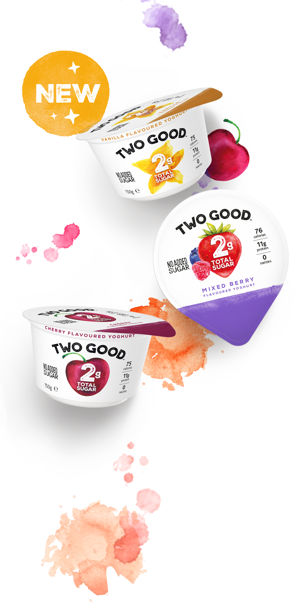

Say hello to... Two Good
ONLY 2g OF SUGAR
AND A TASTE TWO GOOD
TO BE TRUE!
Two Good has over 70% less sugar* than the average yoghurt, thanks to our special process that removes sugar from the milk - leaving only 2 grams of naturally occurring sugar in each cup. And because we like real food, there’s no artificial ingredients added – so it tastes naturally good!
-
Excellent source of protein
-
Deliciously good
-
75 to 76 CALORIES PER CUP**
-

No nasties
*at least 70% less than regular natural dairy yoghurt with 5.1% sugar on FSANZ NUTTAB
**Calories range between 75 and 76 per 150g cup based on flavour
